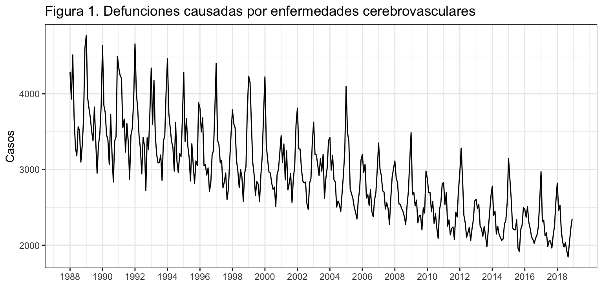
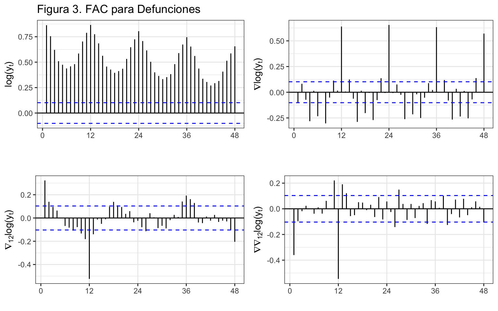
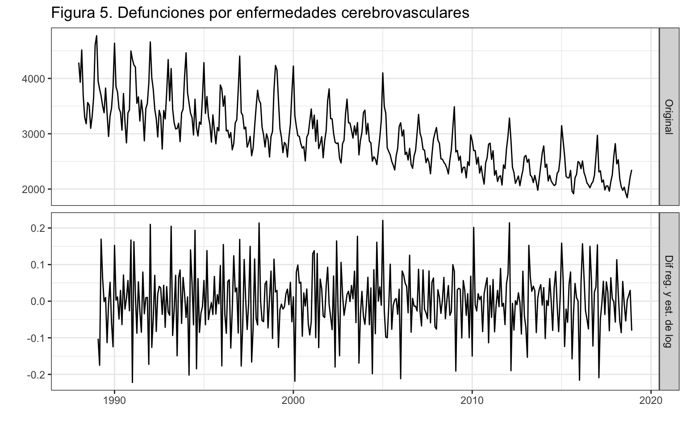
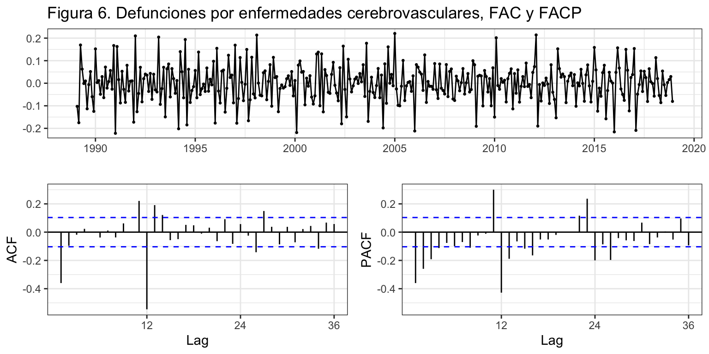
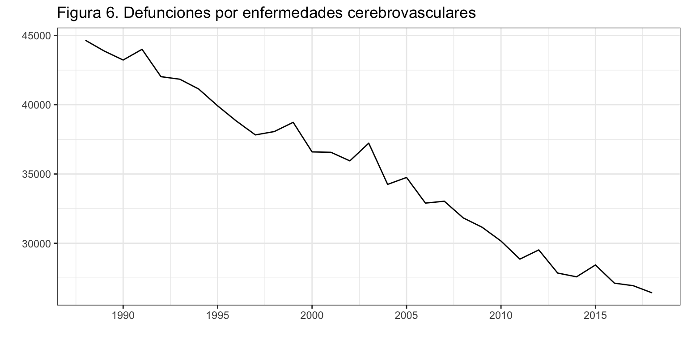

Introducción
Consideremos de nuevo la serie temporal correspondiente al número de defunciones causadas por enfermedades cerebrovasculares. Esta serie está disponible en el Instituto Nacional de Estadística desde enero de 1980 hasta diciembre de 2018, un total de 39 años o 468 meses
En la descriptiva vimos que la descomposición revelaba la presencia de varios valores atípicos concentrados al inicio de la serie. Por este motivo, vamos a recortar la serie y considerarla solo desde enero de 1988, 31 años o 372 meses.
La serie presenta tendencia decreciente y estacionalidad de orden 12 en un claro esquema multiplicativo (véase figura 1).
DefEnfCer <- read.csv2("./series/Enfermedades cerebrovasculares.csv", header = TRUE)
DefEnfCer <- ts(DefEnfCer[,2], start = 1980, frequency = 12)
DefEnfCer <- window(DefEnfCer, start = 1988)
autoplot(DefEnfCer,
xlab = "",
ylab = "Casos",
main = "Figura 1. Defunciones causadas por enfermedades cerebrovasculares") +
scale_x_continuous(breaks= seq(1980, 2018, 2))

Veamos que transformaciones son necesarias para lograr que la serie sea estacionaria y ergódica.
Diferenciaciones
Una vez decidida la transformación logarítmica, usaremos la FAC para determinar las diferenciaciones necesarias para alcanzar una serie estacionaria en media y ergódica.
ggAcf(log(DefEnfCer), lag = 48)
ggAcf(diff(log(DefEnfCer)), lag = 48)
ggAcf(diff(log(DefEnfCer), lag = 12),lag = 48)
ggAcf(diff(diff(log(DefEnfCer), lag=12)), lag = 48)

Los dos paneles superiores de la figura 3 muestran que ni el logaritmo de la serie, ni su tasa de variación mensual \((\nabla \log(y_t))\) son ergódicas. Obsérvese que en ambos casos ni al cabo de 48 retardos los coeficientes de autocorrelación son nulos.
Claramente, la doble diferencia del logaritmo de la serie es estacionaria y ergódica porque el panel inferior derecho muestra que sólo unos pocos coeficientes de autocorrelación son no nulos.
La tasa de variación anual \((\nabla_{12} \log(y_t))\) no ofrece resultados tan claros. El panel inferior izquierdo muestra una rápida caída de los valores de la autocorrelación en la parte regular (primeros valores de retardo), pero siguen observándose valores no nulos para valores de retardo altos.
Por otro lado, las funciones ndiffsy nsdiffs avalan la doble diferenciación regular y estacional.
[1] 1
[1] 1
Concluimos que para alcanzar la estacionariedad y verificar la hipótesis de ergodicidad es necesario diferenciar tanto en su parte regular como estacional el logaritmo de la serie. Es decir, la serie que verifica todas las hipótesis es \(\nabla \nabla_{12} log({y_t}_t)\).
Para finalizar, mostramos gráficamente la serie original y la serie transformada (figura 4), así como la FAC y FACP de la serie transformada (figura 5).
series <- cbind("Original" = DefEnfCer,
"Dif reg. y est. de log" = diff(diff(log(DefEnfCer), lag = 12)))
autoplot(series, facets = TRUE,
xlab = "",
ylab = "",
main = "Figura 4. Defunciones por enfermedades cerebrovasculares")

ggtsdisplay(diff(diff(log(DefEnfCer)), lag = 12),
main = "Figura 5. Defunciones por enfermedades cerebrovasculares, FAC y FACP")

Contraste KPSS
Vamos que hubiéramos concluido respecto de la estacionariedad en media si realizamos un contraste de raíces unitarias. Como la serie original tiene estacionalidad, vamos a realizar la prueba KPSS a partir de la serie anualizada, ya mostrada en la descriptiva.
DefEnfCerAnual <- aggregate(DefEnfCer, FUN = sum)
autoplot(DefEnfCerAnual,
xlab = "",
ylab = "",
main = "Figura 6. Defunciones por enfermedades cerebrovasculares")

Procedemos con la prueba de KPSS con y sin tendencia determinista:
summary(ur.kpss(DefEnfCer, type='tau', lags = 'short'))
#######################
# KPSS Unit Root Test #
#######################
Test is of type: tau with 5 lags.
Value of test-statistic is: 0.0162
Critical value for a significance level of:
10pct 5pct 2.5pct 1pct
critical values 0.119 0.146 0.176 0.216
summary(ur.kpss(DefEnfCer, type='mu', lags = 'short'))
#######################
# KPSS Unit Root Test #
#######################
Test is of type: mu with 5 lags.
Value of test-statistic is: 5.3556
Critical value for a significance level of:
10pct 5pct 2.5pct 1pct
critical values 0.347 0.463 0.574 0.739
Para un nivel de confianza del 5%, si asumimos la presencia de tendencia determinista, entonces no hay tendencia estocástica –el estadístico de contraste 0.016 es menor que el valor crítico 0.146. Si asumimos que no hay tendencia determinista, entonces hay tendencia estocástica –el estadístico de contraste 5.35 es mayor que el valor crítico 0.463. En ambos casos concluimos que la serie no es estacionaria.
Si repetimos el contraste con la serie diferenciada, esta vez para un modelo sin tendencia determinista (type = mu) no se rechaza la hipótesis nula, la serie diferenciada no tiene raíces unitarias y puede considerarse estacionaria.
summary(ur.kpss(diff(DefEnfCer), type='mu', lags = 'short'))
#######################
# KPSS Unit Root Test #
#######################
Test is of type: mu with 5 lags.
Value of test-statistic is: 0.0115
Critical value for a significance level of:
10pct 5pct 2.5pct 1pct
critical values 0.347 0.463 0.574 0.739
LS0tCnRpdGxlOiAiRGVmdW5jaW9uZXMgcG9yIEVuZmVybWVkYWRlcyBDZXJlYnJvdmFzY3VsYXJlcyIKc3VidGl0bGU6ICJQcm9jZXNvcyBlc3RvY8Ohc3RpY29zIgphdXRob3I6ICJJdsOhbiBBcnJpYmFzIChEZXB0by4gQW7DoWxpc2lzIEVjb27Ds21pY28uIFVuaXZlcnNpdGF0IGRlIFZhbMOobmNpYSkiCm91dHB1dDogCiAgaHRtbF9kb2N1bWVudDoKICAgIHRoZW1lOiBjZXJ1bGVhbgogICAgaGlnaGxpZ2h0OiBweWdtZW50cyAKICAgIGZpZ19jYXB0aW9uOiBmYWxzZQogICAgZGZfcHJpbnQ6IGthYmxlCiAgICB0b2M6IHRydWUKICAgIHRvY19kZXB0aDogMgogICAgbnVtYmVyX3NlY3Rpb25zOiB0cnVlCiAgICBzZWxmX2NvbnRhaW5lZDogdHJ1ZQogICAgY29kZV9kb3dubG9hZDogdHJ1ZQotLS0KCmBgYHtyIGNodW5rX3NldHVwLCBlY2hvID0gRkFMU0V9CmtuaXRyOjpvcHRzX2NodW5rJHNldCh3YXJuaW5nID0gRkFMU0UsIAogICAgICAgICAgICAgICAgICAgICAgbWVzc2FnZSA9IEZBTFNFLCAKICAgICAgICAgICAgICAgICAgICAgIGNvbW1lbnQgPSAiIiwKICAgICAgICAgICAgICAgICAgICAgIGZpZy5hbGlnbiA9ICJjZW50ZXIiLCAKICAgICAgICAgICAgICAgICAgICAgIGZpZy5zaG93ID0gImhvbGQiLAogICAgICAgICAgICAgICAgICAgICAgZmlnLmhlaWdodCA9IDQsCiAgICAgICAgICAgICAgICAgICAgICBmaWcud2lkdGggPSA4LAogICAgICAgICAgICAgICAgICAgICAgb3V0LndpZHRoID0gIjgwJSIpIApgYGAKCmBgYHtyIG9wdGlvbnNfc2V0dXAsIGVjaG8gPSBGQUxTRX0Kb3B0aW9ucyhzY2lwZW4gPSA5OTkpICMtIHBhcmEgcXVpdGFyIGxhIG5vdGFjaW9uIGNpZW50aWZpY2EKYGBgCgpgYGB7ciBsaWJyZXJpYXMsIGVjaG8gPSBGQUxTRX0KbGlicmFyeShmb3JlY2FzdCkKbGlicmFyeShnZ3Bsb3QyKTsgdGhlbWVfc2V0KHRoZW1lX2J3KCkpCmxpYnJhcnkoZ3JpZEV4dHJhKQpsaWJyYXJ5KGdyaWQpCmxpYnJhcnkodXJjYSkKYGBgCgojIEludHJvZHVjY2nDs24KCkNvbnNpZGVyZW1vcyBkZSBudWV2byBsYSBzZXJpZSB0ZW1wb3JhbCBjb3JyZXNwb25kaWVudGUgYWwgbsO6bWVybyBkZSBkZWZ1bmNpb25lcyBjYXVzYWRhcyBwb3IgZW5mZXJtZWRhZGVzIGNlcmVicm92YXNjdWxhcmVzLiBFc3RhIHNlcmllIGVzdMOhIGRpc3BvbmlibGUgZW4gZWwgSW5zdGl0dXRvIE5hY2lvbmFsIGRlIEVzdGFkw61zdGljYSBkZXNkZSBlbmVybyBkZSAxOTgwIGhhc3RhIGRpY2llbWJyZSBkZSAyMDE4LCB1biB0b3RhbCBkZSAzOSBhw7FvcyBvIDQ2OCBtZXNlcwoKRW4gbGEgZGVzY3JpcHRpdmEgdmltb3MgcXVlIGxhIGRlc2NvbXBvc2ljacOzbiByZXZlbGFiYSBsYSBwcmVzZW5jaWEgZGUgdmFyaW9zIHZhbG9yZXMgYXTDrXBpY29zIGNvbmNlbnRyYWRvcyBhbCBpbmljaW8gZGUgbGEgc2VyaWUuIFBvciBlc3RlIG1vdGl2bywgdmFtb3MgYSByZWNvcnRhciBsYSBzZXJpZSB5IGNvbnNpZGVyYXJsYSBzb2xvIGRlc2RlIGVuZXJvIGRlIDE5ODgsIDMxIGHDsW9zIG8gMzcyIG1lc2VzLgoKTGEgc2VyaWUgcHJlc2VudGEgdGVuZGVuY2lhIGRlY3JlY2llbnRlIHkgZXN0YWNpb25hbGlkYWQgZGUgb3JkZW4gMTIgZW4gdW4gY2xhcm8gZXNxdWVtYSBtdWx0aXBsaWNhdGl2byAodsOpYXNlIGZpZ3VyYSAxKS4KCgpgYGB7cn0KRGVmRW5mQ2VyIDwtIHJlYWQuY3N2MigiLi9zZXJpZXMvRW5mZXJtZWRhZGVzIGNlcmVicm92YXNjdWxhcmVzLmNzdiIsIGhlYWRlciA9IFRSVUUpCkRlZkVuZkNlciA8LSB0cyhEZWZFbmZDZXJbLDJdLCBzdGFydCA9IDE5ODAsIGZyZXF1ZW5jeSA9IDEyKQpEZWZFbmZDZXIgPC0gd2luZG93KERlZkVuZkNlciwgc3RhcnQgPSAxOTg4KQoKYXV0b3Bsb3QoRGVmRW5mQ2VyLAogICAgICAgICB4bGFiID0gIiIsCiAgICAgICAgIHlsYWIgPSAiQ2Fzb3MiLAogICAgICAgICBtYWluID0gIkZpZ3VyYSAxLiBEZWZ1bmNpb25lcyBjYXVzYWRhcyBwb3IgZW5mZXJtZWRhZGVzIGNlcmVicm92YXNjdWxhcmVzIikgKwogIHNjYWxlX3hfY29udGludW91cyhicmVha3M9IHNlcSgxOTgwLCAyMDE4LCAyKSkgCmBgYAoKVmVhbW9zIHF1ZSB0cmFuc2Zvcm1hY2lvbmVzIHNvbiBuZWNlc2FyaWFzIHBhcmEgbG9ncmFyIHF1ZSBsYSBzZXJpZSBzZWEgZXN0YWNpb25hcmlhIHkgZXJnw7NkaWNhLgoKXApcCgojIFRyYW5zZm9ybWFjacOzbiBsb2dhcsOtdG1pY2EKCkVsIGVzcXVlbWEgbXVsdGlwbGljYXRpdm8gYWNvbnNlamEgZWwgdXNvIGRlbCBsb2dhcml0bW8gcGFyYSBlbCBhbsOhbGlzaXMgZGUgbGEgc2VyaWUuIFZlYW1vcyBxdWUgdHJhbnNmb3JtYWNpw7NuIGRlIEJveC1Db3ggbm9zIHN1Z2llcmUgYFJgOgoKYGBge3J9CihubCA8LSBCb3hDb3gubGFtYmRhKERlZkVuZkNlcikpCndEZWZFbmZDZXIgPC1Cb3hDb3goRGVmRW5mQ2VyLCBsYW1iZGEgPSBubCkKYGBgCgpFbCB2YWxvciBzdWdlcmlkbyBkZSAkXGxhbWJkYT0tMC4zMTgkIGVzdMOhIGFsZWphZG8gZGUgMCB5IGVzIGRpZsOtY2lsIGRlIGludGVycHJldGFyLiBBZm9ydHVuYWRhbWVudGUgbGEgZmlndXJhIDIgbXVlc3RyYSBxdWUgbGEgdHJhbnNmb3JtYWNpw7NuIGxvZ2Fyw610bWljYSAocGFuZWwgaW5mZXJpb3IpIGdlbmVyYSB1bmEgc2VyaWUgbXV5IHNpbWlsYXIgYSBsYSB0cmFuc2Zvcm1hY2nDs24gZGUgQm94LUNveCDDs3B0aW1hIChwYW5lbCBtZWRpbyk7IHkgcXVlIGFtYmFzIHNlcmllcyB0cmFuc2Zvcm1hZGFzIHRpZW5lbiB1bmEgdmFyaWFuemEgbcOhcyBjb25zdGFudGUgcXVlIGxhIHNlcmllIG9yaWdpbmFsIChwYW5lbCBzdXBlcmlvcikuCgpgYGB7ciwgZmlnLmhlaWdodCA9IDV9CnNlcmllcyA8LSBjYmluZCgiT3JpZ2luYWwiID0gRGVmRW5mQ2VyLAogICAgICAgICAgICAgICAgIlRyYW5zZm9ybWFjacOzbiBCb3gtQ294IiA9IHdEZWZFbmZDZXIsCiAgICAgICAgICAgICAgICAiTG9nYXJpdG1vIiA9IGxvZyhEZWZFbmZDZXIpKQphdXRvcGxvdChzZXJpZXMsIGZhY2V0cyA9IFRSVUUsCiAgICAgICAgIHhsYWIgPSAiIiwKICAgICAgICAgeWxhYiA9ICIiLAogICAgICAgICBtYWluID0gIkZpZ3VyYSAyLiBEZWZ1bmNpb25lcyBjYXVzYWRhcyBwb3IgZW5mZXJtZWRhZGVzIGNlcmVicm92YXNjdWxhcmVzIikKYGBgCgpDb25jbHVpbW9zIHF1ZSAqKnNlIHVzYXLDoSBlbCBsb2dhcml0bW8gZGUgbGFzIGRlZnVuY2lvbmVzIGNhdXNhZGFzIHBvciBlbmZlcm1lZGFkZXMgY2VyZWJyb3Zhc2N1bGFyZXMqKiBlbiBsdWdhciBkZSBsYSBzZXJpZSBvcmlnaW5hbC4KClwKXAoKIyBEaWZlcmVuY2lhY2lvbmVzCgpVbmEgdmV6IGRlY2lkaWRhIGxhIHRyYW5zZm9ybWFjacOzbiBsb2dhcsOtdG1pY2EsIHVzYXJlbW9zIGxhIEZBQyBwYXJhIGRldGVybWluYXIgbGFzIGRpZmVyZW5jaWFjaW9uZXMgbmVjZXNhcmlhcyBwYXJhIGFsY2FuemFyIHVuYSBzZXJpZSBlc3RhY2lvbmFyaWEgZW4gbWVkaWEgeSBlcmfDs2RpY2EuCgpgYGB7ciwgZXZhbCA9IEZBTFNFfQpnZ0FjZihsb2coRGVmRW5mQ2VyKSwgbGFnID0gNDgpCmdnQWNmKGRpZmYobG9nKERlZkVuZkNlcikpLCBsYWcgPSA0OCkKZ2dBY2YoZGlmZihsb2coRGVmRW5mQ2VyKSwgbGFnID0gMTIpLGxhZyA9IDQ4KQpnZ0FjZihkaWZmKGRpZmYobG9nKERlZkVuZkNlciksIGxhZz0xMikpLCBsYWcgPSA0OCkKYGBgCgpgYGB7ciwgZWNobyA9IEZBTFNFLCBmaWcuaGVpZ2h0PTV9CmdyaWQuYXJyYW5nZSgKICBnZ0FjZihsb2coRGVmRW5mQ2VyKSwgbGFnID0gNDgsIAogICAgICAgIG1haW4gPSAiRmlndXJhIDMuIEZBQyBwYXJhIERlZnVuY2lvbmVzIiwgCiAgICAgICAgeGxhYiA9ICIiLCAKICAgICAgICB5bGFiID0gZXhwcmVzc2lvbigibG9nKCIqeVt0XSoiKSIpKSwKICBnZ0FjZihkaWZmKGxvZyhEZWZFbmZDZXIpKSwgbGFnID0gNDgsIAogICAgICAgIG1haW4gPSAiIiwgeGxhYiA9ICIiLCAKICAgICAgICB5bGFiID0gZXhwcmVzc2lvbihuYWJsYSoibG9nKCIqeVt0XSoiKSIpKSwKICBnZ0FjZihkaWZmKGxvZyhEZWZFbmZDZXIpLCBsYWcgPSAxMiksbGFnID0gNDgsIAogICAgICAgIG1haW4gPSAiIiwgeGxhYiA9ICIiLCAKICAgICAgICB5bGFiID0gZXhwcmVzc2lvbihuYWJsYVsxMl0qImxvZygiKnlbdF0qIikiKSksCiAgZ2dBY2YoZGlmZihkaWZmKGxvZyhEZWZFbmZDZXIpLCBsYWc9MTIpKSwgbGFnID0gNDgsIAogICAgICAgIG1haW4gPSAiIiwgeGxhYiA9ICIiLCAKICAgICAgICB5bGFiID0gZXhwcmVzc2lvbihuYWJsYSpuYWJsYVsxMl0qImxvZygiKnlbdF0qIikiKSksCiAgbnJvdyA9IDIKKQpgYGAKCgpMb3MgZG9zIHBhbmVsZXMgc3VwZXJpb3JlcyBkZSBsYSBmaWd1cmEgMyBtdWVzdHJhbiBxdWUgbmkgZWwgbG9nYXJpdG1vIGRlIGxhIHNlcmllLCBuaSBzdSB0YXNhIGRlIHZhcmlhY2nDs24gbWVuc3VhbCAkKFxuYWJsYSBcbG9nKHlfdCkpJCBzb24gZXJnw7NkaWNhcy4gT2Jzw6lydmVzZSBxdWUgZW4gYW1ib3MgY2Fzb3MgbmkgYWwgY2FibyBkZSA0OCByZXRhcmRvcyBsb3MgY29lZmljaWVudGVzIGRlIGF1dG9jb3JyZWxhY2nDs24gc29uIG51bG9zLgoKQ2xhcmFtZW50ZSwgbGEgZG9ibGUgZGlmZXJlbmNpYSBkZWwgbG9nYXJpdG1vIGRlIGxhIHNlcmllIGVzIGVzdGFjaW9uYXJpYSB5IGVyZ8OzZGljYSBwb3JxdWUgZWwgcGFuZWwgaW5mZXJpb3IgZGVyZWNobyBtdWVzdHJhIHF1ZSBzw7NsbyB1bm9zIHBvY29zIGNvZWZpY2llbnRlcyBkZSBhdXRvY29ycmVsYWNpw7NuIHNvbiBubyBudWxvcy4KCkxhIHRhc2EgZGUgdmFyaWFjacOzbiBhbnVhbCAkKFxuYWJsYV97MTJ9IFxsb2coeV90KSkkIG5vIG9mcmVjZSByZXN1bHRhZG9zIHRhbiBjbGFyb3MuIEVsIHBhbmVsIGluZmVyaW9yIGl6cXVpZXJkbyBtdWVzdHJhIHVuYSByw6FwaWRhIGNhw61kYSBkZSBsb3MgdmFsb3JlcyBkZSBsYSBhdXRvY29ycmVsYWNpw7NuIGVuIGxhIHBhcnRlIHJlZ3VsYXIgKHByaW1lcm9zIHZhbG9yZXMgZGUgcmV0YXJkbyksIHBlcm8gc2lndWVuIG9ic2VydsOhbmRvc2UgdmFsb3JlcyBubyBudWxvcyBwYXJhIHZhbG9yZXMgZGUgcmV0YXJkbyBhbHRvcy4KClBvciBvdHJvIGxhZG8sIGxhcyBmdW5jaW9uZXMgYG5kaWZmc2B5IGBuc2RpZmZzYCBhdmFsYW4gbGEgZG9ibGUgZGlmZXJlbmNpYWNpw7NuIHJlZ3VsYXIgeSBlc3RhY2lvbmFsLgoKYGBge3J9Cm5kaWZmcyhsb2coRGVmRW5mQ2VyKSkKbnNkaWZmcyhsb2coRGVmRW5mQ2VyKSkKYGBgCgpDb25jbHVpbW9zIHF1ZSAqKnBhcmEgYWxjYW56YXIgbGEgZXN0YWNpb25hcmllZGFkIHkgdmVyaWZpY2FyIGxhIGhpcMOzdGVzaXMgZGUgZXJnb2RpY2lkYWQgZXMgbmVjZXNhcmlvIGRpZmVyZW5jaWFyIHRhbnRvIGVuIHN1IHBhcnRlIHJlZ3VsYXIgY29tbyBlc3RhY2lvbmFsIGVsIGxvZ2FyaXRtbyBkZSBsYSBzZXJpZSoqLiBFcyBkZWNpciwgbGEgc2VyaWUgcXVlIHZlcmlmaWNhIHRvZGFzIGxhcyBoaXDDs3Rlc2lzIGVzICRcbmFibGEgXG5hYmxhX3sxMn0gbG9nKHt5X3R9X3QpJC4KClBhcmEgZmluYWxpemFyLCBtb3N0cmFtb3MgZ3LDoWZpY2FtZW50ZSBsYSBzZXJpZSBvcmlnaW5hbCB5IGxhIHNlcmllIHRyYW5zZm9ybWFkYSAoZmlndXJhIDQpLCBhc8OtIGNvbW8gbGEgRkFDIHkgRkFDUCBkZSBsYSBzZXJpZSB0cmFuc2Zvcm1hZGEgKGZpZ3VyYSA1KS4KCmBgYHtyLCBmaWcuaGVpZ2h0ID0gNX0Kc2VyaWVzIDwtIGNiaW5kKCJPcmlnaW5hbCIgPSBEZWZFbmZDZXIsCiAgICAgICAgICAgICAgICAiRGlmIHJlZy4geSBlc3QuIGRlIGxvZyIgPSBkaWZmKGRpZmYobG9nKERlZkVuZkNlciksIGxhZyA9IDEyKSkpCmF1dG9wbG90KHNlcmllcywgZmFjZXRzID0gVFJVRSwKICAgICAgICAgeGxhYiA9ICIiLAogICAgICAgICB5bGFiID0gIiIsCiAgICAgICAgIG1haW4gPSAiRmlndXJhIDQuIERlZnVuY2lvbmVzIHBvciBlbmZlcm1lZGFkZXMgY2VyZWJyb3Zhc2N1bGFyZXMiKQpgYGAKCmBgYHtyfQpnZ3RzZGlzcGxheShkaWZmKGRpZmYobG9nKERlZkVuZkNlcikpLCBsYWcgPSAxMiksCiAgICAgICAgICAgIG1haW4gPSAiRmlndXJhIDUuIERlZnVuY2lvbmVzIHBvciBlbmZlcm1lZGFkZXMgY2VyZWJyb3Zhc2N1bGFyZXMsIEZBQyB5IEZBQ1AiKQoKYGBgCgpcClwKCiMgQ29udHJhc3RlIEtQU1MKClZhbW9zIHF1ZSBodWJpw6lyYW1vcyBjb25jbHVpZG8gcmVzcGVjdG8gZGUgbGEgZXN0YWNpb25hcmllZGFkIGVuIG1lZGlhIHNpIHJlYWxpemFtb3MgdW4gY29udHJhc3RlIGRlIHJhw61jZXMgdW5pdGFyaWFzLiBDb21vIGxhIHNlcmllIG9yaWdpbmFsIHRpZW5lIGVzdGFjaW9uYWxpZGFkLCB2YW1vcyBhIHJlYWxpemFyIGxhIHBydWViYSBLUFNTIGEgcGFydGlyIGRlIGxhIHNlcmllIGFudWFsaXphZGEsIHlhIG1vc3RyYWRhIGVuIGxhIGRlc2NyaXB0aXZhLgoKYGBge3J9ICAKRGVmRW5mQ2VyQW51YWwgPC0gYWdncmVnYXRlKERlZkVuZkNlciwgRlVOID0gc3VtKQoKYXV0b3Bsb3QoRGVmRW5mQ2VyQW51YWwsCiAgICAgICAgIHhsYWIgPSAiIiwKICAgICAgICAgeWxhYiA9ICIiLAogICAgICAgICBtYWluID0gIkZpZ3VyYSA2LiBEZWZ1bmNpb25lcyBwb3IgZW5mZXJtZWRhZGVzIGNlcmVicm92YXNjdWxhcmVzIikgCmBgYAoKUHJvY2VkZW1vcyBjb24gbGEgcHJ1ZWJhIGRlIEtQU1MgY29uIHkgc2luIHRlbmRlbmNpYSBkZXRlcm1pbmlzdGE6CgpgYGB7cn0Kc3VtbWFyeSh1ci5rcHNzKERlZkVuZkNlciwgdHlwZT0ndGF1JywgbGFncyA9ICdzaG9ydCcpKQpzdW1tYXJ5KHVyLmtwc3MoRGVmRW5mQ2VyLCB0eXBlPSdtdScsIGxhZ3MgPSAnc2hvcnQnKSkKYGBgCgpQYXJhIHVuIG5pdmVsIGRlIGNvbmZpYW56YSBkZWwgNSUsIHNpIGFzdW1pbW9zIGxhIHByZXNlbmNpYSBkZSB0ZW5kZW5jaWEgZGV0ZXJtaW5pc3RhLCBlbnRvbmNlcyBubyBoYXkgdGVuZGVuY2lhIGVzdG9jw6FzdGljYSAtLWVsIGVzdGFkw61zdGljbyBkZSBjb250cmFzdGUgMC4wMTYgZXMgbWVub3IgcXVlIGVsIHZhbG9yIGNyw610aWNvIDAuMTQ2LiBTaSBhc3VtaW1vcyBxdWUgbm8gaGF5IHRlbmRlbmNpYSBkZXRlcm1pbmlzdGEsIGVudG9uY2VzIGhheSB0ZW5kZW5jaWEgZXN0b2PDoXN0aWNhIC0tZWwgZXN0YWTDrXN0aWNvIGRlIGNvbnRyYXN0ZSA1LjM1IGVzIG1heW9yIHF1ZSBlbCB2YWxvciBjcsOtdGljbyAwLjQ2My4gRW4gYW1ib3MgY2Fzb3MgX19jb25jbHVpbW9zIHF1ZSBsYSBzZXJpZSBubyBlcyBlc3RhY2lvbmFyaWFfXy4KClNpIHJlcGV0aW1vcyBlbCBjb250cmFzdGUgY29uIGxhIHNlcmllIGRpZmVyZW5jaWFkYSwgZXN0YSB2ZXogcGFyYSB1biBtb2RlbG8gc2luIHRlbmRlbmNpYSBkZXRlcm1pbmlzdGEgKGB0eXBlID0gbXVgKSBubyBzZSByZWNoYXphIGxhIGhpcMOzdGVzaXMgbnVsYSwgbGEgc2VyaWUgZGlmZXJlbmNpYWRhIG5vIHRpZW5lIHJhw61jZXMgdW5pdGFyaWFzIHkgcHVlZGUgY29uc2lkZXJhcnNlIGVzdGFjaW9uYXJpYS4KCmBgYHtyfQpzdW1tYXJ5KHVyLmtwc3MoZGlmZihEZWZFbmZDZXIpLCB0eXBlPSdtdScsIGxhZ3MgPSAnc2hvcnQnKSkKYGBgCgpcClwKXApcCg==